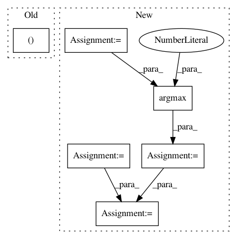

bd298684614646d8f0db5a6597ef88b8d662e25e,tests/defences/test_distillation.py,TestDistillationVectors,test_keras_iris,#TestDistillationVectors#,267
Before Change
trained_classifier = get_iris_classifier_kr()
// Create the modified classifier
modified_classifier, _ = get_iris_classifier_kr(load_init=False)
// Create distillation transformer
transformer = Distillation(
After Change
batch_size=BATCH_SIZE
)
preds2 = modified_classifier.predict(
x=self.x_train_iris,
batch_size=BATCH_SIZE
)
preds1 = np.argmax(preds1, axis=1)
preds2 = np.argmax(preds2, axis=1)
acc = np.sum(preds1 == preds2) / len(preds1)
self.assertGreater(acc, 0.2)
ce = cross_entropy(preds1, preds2)
self.assertLess(ce, 20)
self.assertGreaterEqual(ce, 0)
In pattern: SUPERPATTERN
Frequency: 3
Non-data size: 6
Instances
Project Name: IBM/adversarial-robustness-toolbox
Commit Name: bd298684614646d8f0db5a6597ef88b8d662e25e
Time: 2020-02-21
Author: M.N.Tran@ibm.com
File Name: tests/defences/test_distillation.py
Class Name: TestDistillationVectors
Method Name: test_keras_iris
Project Name: CellProfiler/CellProfiler
Commit Name: 9303d06331cf6895188591e623cbbca76ea27c3d
Time: 2011-07-12
Author: thouis@1fc53939-2000-0410-845c-e8453a809027
File Name: cellprofiler/objects.py
Class Name: Objects
Method Name: relate_children
Project Name: yahoo/TensorFlowOnSpark
Commit Name: 981e4266d4ea816b08a762193bd52f40cd1a3242
Time: 2019-08-07
Author: leewyang@verizonmedia.com
File Name: examples/mnist/keras/mnist_inference.py
Class Name:
Method Name: inference